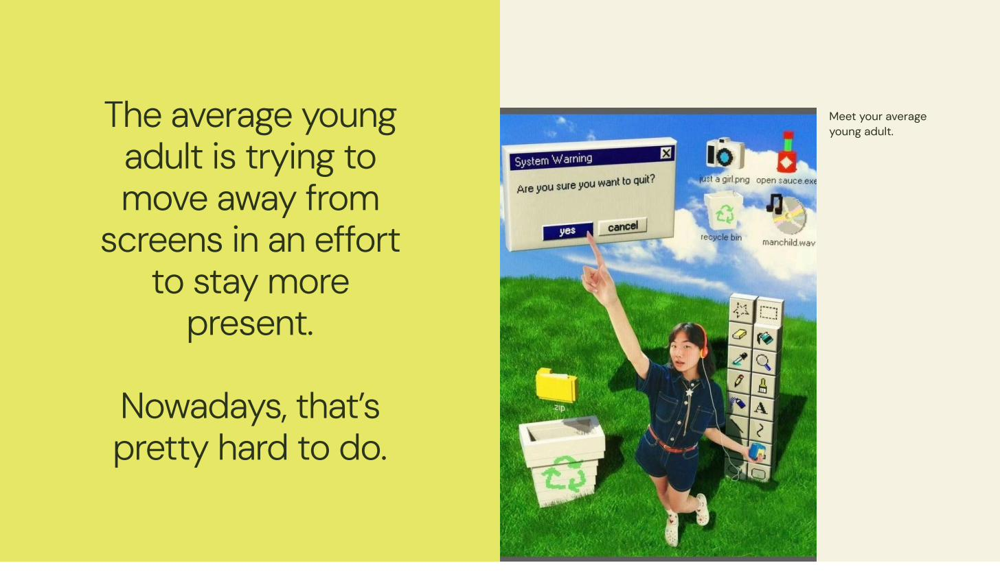
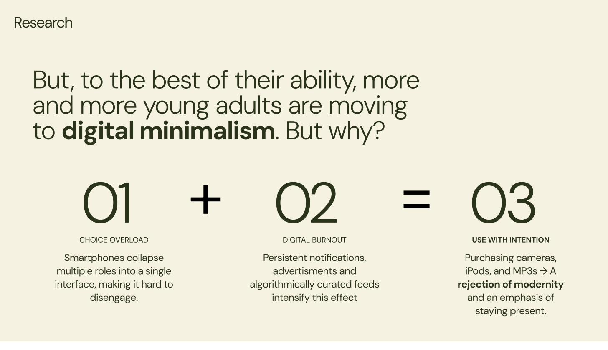
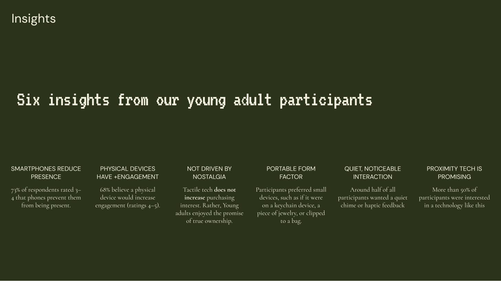
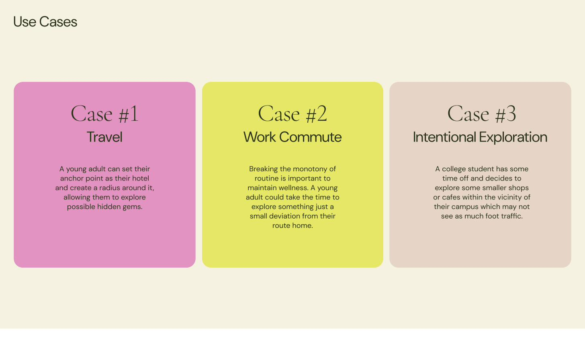
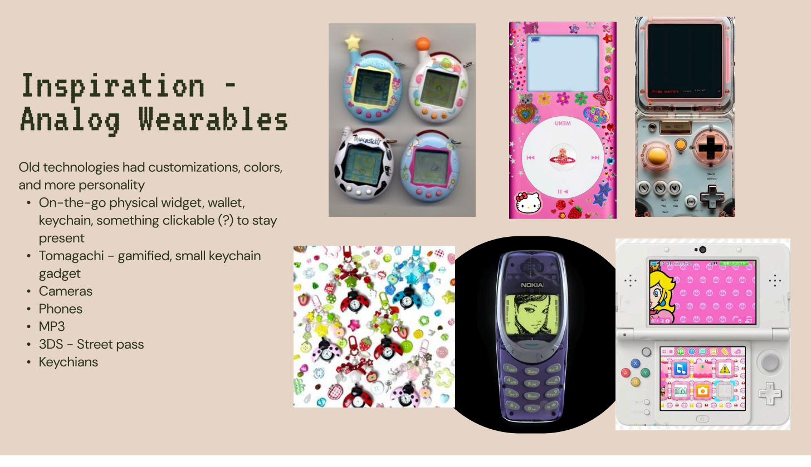
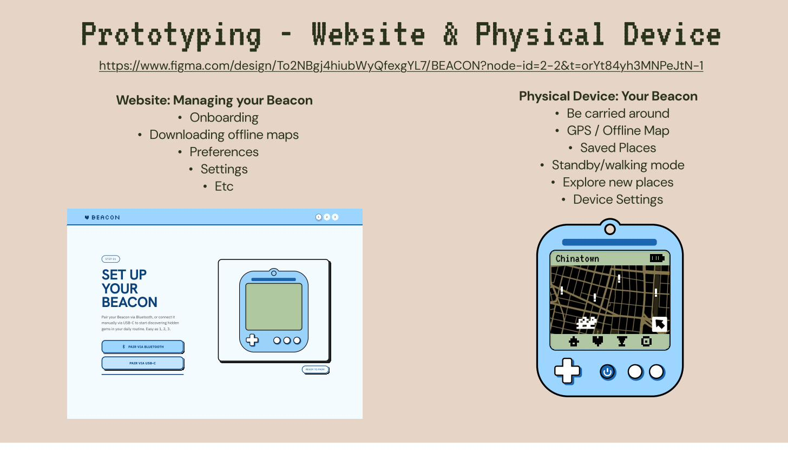
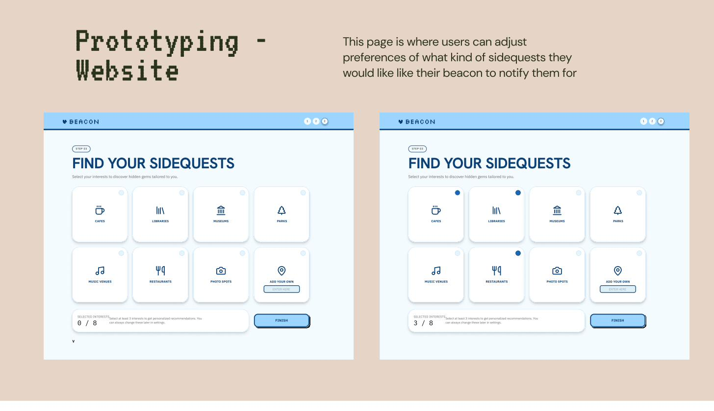
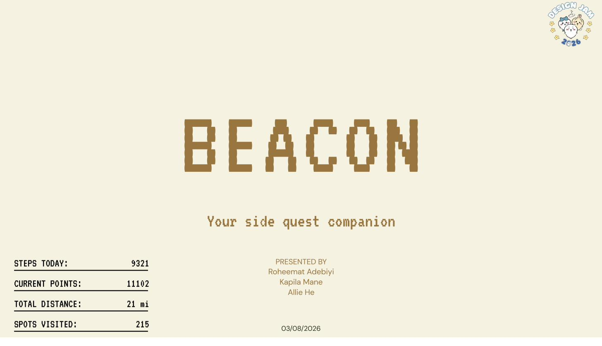

Your side quest companion. A GameBoy-inspired physical device paired with a companion website — designed for young adults who want to explore their city without looking at their phone.

The average young adult is trying to move away from screens — but that's increasingly hard to do.
The Design Jam prompt was broad: design a product for young adults navigating the tension between digital life and physical presence. We started where all good design starts: with the people, not the product idea.
In 48 hours, we conducted rapid research with young adults (ages 18–26), running a combination of a quick survey and five in-depth interviews about their relationship with smartphones and how they experience their city day-to-day.

Our research synthesis: choice overload + digital burnout = a growing movement toward intentional device use.
Three themes emerged quickly. First: smartphones weren't just tools — they'd collapsed multiple roles (navigation, entertainment, communication, camera) into one device, making it nearly impossible to be present without "missing out." Second: the digital minimalism movement wasn't driven by nostalgia — young adults were buying cameras, iPods, and old-school MP3 players not to be retro, but to own their attention. Third: GPS and navigation specifically were the hardest phone use to replace — people didn't want to get lost, but they also didn't want to follow a blue dot all day.

Our six research insights from young adult participants — the foundation of our design direction.
We synthesized our research into six key insights that directly shaped the product concept:
The majority of participants (rating 3–4 out of 5) felt their phones actively prevented them from being present.
Participants believed a dedicated physical device would increase their engagement with their surroundings (rating 4–5 out of 5).
Young adults weren't interested in old tech for the retro feeling — they wanted the promise of true ownership of their focus.
Participants consistently preferred small, portable devices — keychain-sized, jewelry-like, or something that clips to a bag.
Around half of participants wanted a quiet chime or haptic feedback — something subtle but unmistakable.
More than half were interested in technology that could guide them based on proximity to interesting places, not turn-by-turn directions.
The design brief that emerged: a small, tactile, carry-everywhere device that uses proximity-based guidance to help you discover hidden gems in your city — without requiring you to stare at a screen.

Three core use cases: travel exploration, work commute variety, and intentional local discovery.

Inspiration board: Tamagotchi, Hello Kitty iPods, Nintendo 3DS, keychains — objects with personality and portability.
The physical design direction came directly from our research: participants referenced Tamagotchis, keychain gadgets, and old Nokia phones — objects that felt personal, tactile, and intentional. Old technologies had customization, color, and personality. They were yours in a way that a smartphone never quite is.
We landed on a GameBoy-inspired form factor: a small handheld device with a pixelated display, D-pad, and a few buttons — recognizable, satisfying to hold, and small enough to clip to a bag. The display would show a low-fidelity map (not a Google Maps replica) with proximity indicators for saved places. The gamification layer: a points system for spots visited, steps walked, and distance covered — turning exploration into a side quest.
We paired this with a companion website for onboarding, preference setting, and offline map downloading — because we didn't want to require a smartphone in your pocket to make the device work.

Prototyping in Figma: the companion website (left) handles onboarding and preferences; the physical device (right) is your GPS companion.
The physical device features a pixelated map display showing your current position and nearby saved spots. Navigation is intentionally low-fidelity — no turn-by-turn, no street-level detail. Instead: a proximity indicator that gets stronger as you approach a saved location. Three buttons handle: bookmark a spot, toggle standby/walking mode, and access device settings. Battery life prioritized over screen brightness.

The "Find Your Sidequests" screen — users select categories of interest to personalize the places Beacon alerts them to.
The website handles everything the device can't: onboarding (pairing via Bluetooth or USB-C), offline map downloading for your local area, interest preferences (cafes, libraries, parks, music venues, restaurants, photo spots), and account settings. The design language matched the device — a slightly retro, personality-forward aesthetic that felt like owning a pet, not using an enterprise app.

Beacon — "Your side quest companion." Presented at NJIT Design Jam 2026.
We presented Beacon to a panel of judges including industry designers and NJIT faculty. The concept placed 2nd out of a field of over 750 participants — an international competition drawing teams from across the design community.
Judge feedback highlighted the research foundation: the insights from our survey and interviews were specific enough to directly justify every design choice, which made the critique session unusually focused. No one asked "but why would someone want this?" because we'd already shown them the data.
Beacon taught me what it feels like to let research change your idea, not just validate it. We started the jam thinking we'd build an app. After the first few interviews, it was clear that an app — no matter how good — couldn't solve the problem we'd found. The problem was the phone itself. That led us to a physical product, which led us to a design direction none of us had expected to be in.
In 48 hours, with three people and a single Figma file, we designed something that judges and users responded to as feeling real — not like a concept, but like something that should exist. That's the best design feedback there is.